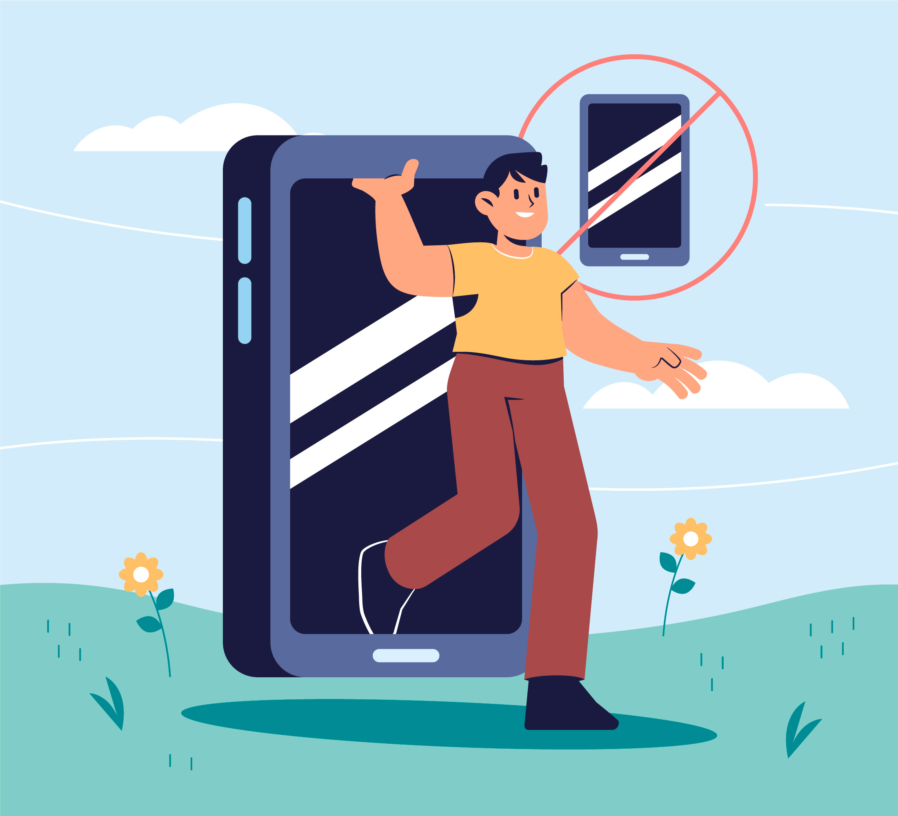

BAHAYA MENGGUNAKAN GADGET
Penggunaan gadget sebagai penunjang aktivitas masyarakat sehari-hari baik di rumah, sekolah, maupun kantor juga memberikan pengaruh buruk bagi masalah kesehatan tubuh jika digunakan secara tidak bijak dan berlebihan. Pagi, siang, sore, dan malam dimanapun dan kapanpun mata kita selalu tertuju pada layar gadget kita dan seringkali membuat kita melupakan tugas utama kita baik itu di rumah, sekolah maupun kantor tempat kita bekerja.